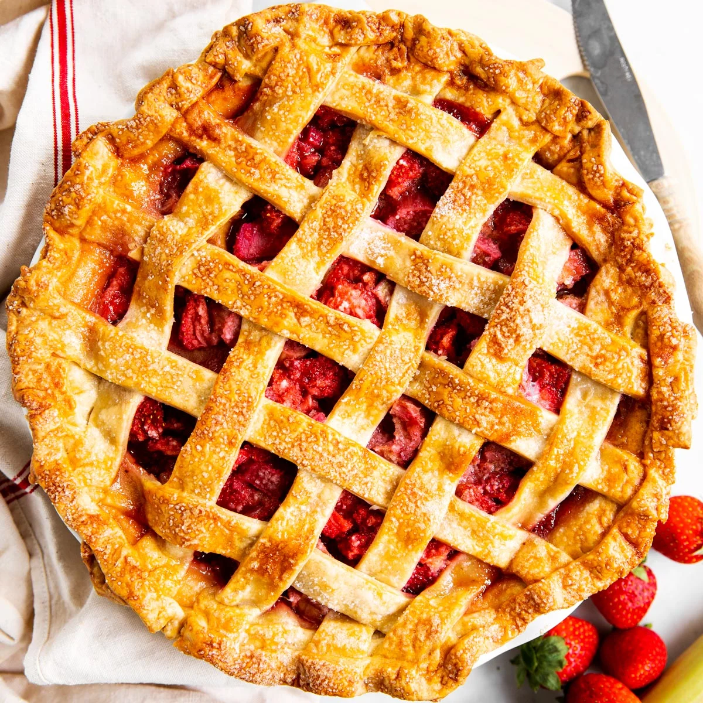

Strawberry Rhubarb Pie

Build Her a Pie
A mouth-watering description of this absolutely delicious pie!
If you don't like Strawberry Rhubarb Pie, then life has failed you.
Ingredients
- strawberries
- rhubarb
- pie crust
Instructions
- prepare strawberries
- prepare rhubarb
- mix strawberries and rhubarb
- add mix to pie crust
- bake at 375 degrees F for 20 minutes